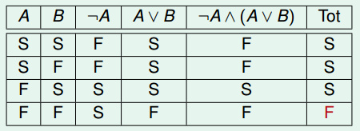
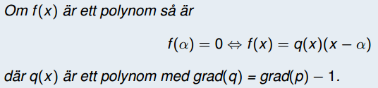
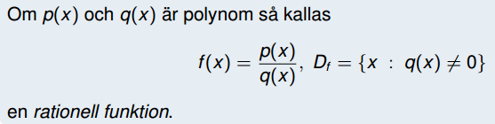
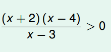
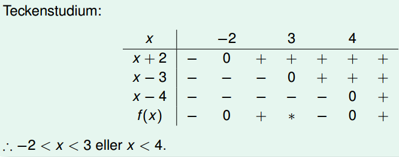

(Algebra och diskret matematik)
Kan vara Sann eller Falsk, Öppen eller sluten
2x + 5 är ingen utsaga
x² + y² = 5 är en öppen utsaga
4 ≥ 3 är en sluten, sann utsaga
Negationen till utsagan A betecknas ¬A, och är motsatsen till A.
A: x ≥ 2 ⇒ ¬A: x < 2
A∧B är sant om A och B är sanna.
A∨B är sant om A eller B är sanna.
En sammansatt utsaga är en tautologi/kontradiktion om den alltid är sann/falsk oberoende av de ingående utsagornas sanningsvärde.
(¬A∧(A∨B))∨A är varken tautologi eller kontradiktion. Se bild nedan:
Utsagan A ⇒ B (medför, om ... så är) kallas en implikation.
A kallas förutsättning (premiss, hypotes) och B kallas slutsats (konsekvens)
∀: ”För varje”, ”för alla”
∃: ”Det finns (existerar) en/ett”
Utsagan A: ”Alla hundar kan skälla” kan skrivas som A: ∀ hund; hunden kan skälla
B: Det finns ett reellt tal x sådant att 2x = 4.
B: ∃ x ∈ R:2x = 4
Antalet element i en mängd A kallas mängdens kardinalitet och betecknas |A|.
Två mängder är lika om de innehåller samma element.
Den tomma mängden ∅ innehåller inga element.
Det finns alltid en grundmängd eller universum U.
Ett påstående skall bevisas med hjälp av induktion, beroende på n.
Om påståendet är sant för n = 1 och n = p är det också sant för n = p + 1. Enligt induktionsaxiomet är därför påståendet sant för alla n ≥ 1.
Den diofantiska ekvationen ax + by = c har heltalslösningar OMM SGD(a,b) | c
Två tal a och b tillhör samma ekvivalensklass om a ≡ b (mod n), dvs de har samma rest vid division med n.
#permutationer är #sätt att ordna en mängd med hänsyn till ordningen, n!
∑(∀ noders grad) = 2*(antal kanter)
Om man vill optimera det kromatiska talet så bör man börja färga i mitten.
En funktion är injektiv om det för varje y finns högst ett x.
En funktion är surjektiv om det för varje y finns minst ett x.
En funktion är bijektiv (och inverterbar) om det för varje y finns exakt ett x.
Den Cartesiska produkten av två mängder är alla element som finns i båda mängderna.
En ekvivalensrelation på A är reflexiv, symmetrisk och transitiv
En partiell ordningsrelation på A är reflexiv, antisymmerisk och transitiv
Om r är en rot till polynomet f(x) så är (x-r) en faktor i f(x).
Om en funktion f(x) kan bli odefinierad (ex 0 i nämnaren) så kallas det för en rationell funktion
Teckenstudium bör göras när en relation såsom bilden nedan skall undersökas.
| Vinkel | sin | cos |
|---|---|---|
| π/6 | ½ | √3/2 |
| π/4 | 1/√2 | 1/√2 |
| π/3 | √3/2 | ½ |
| π/2 | 1 | 0 |